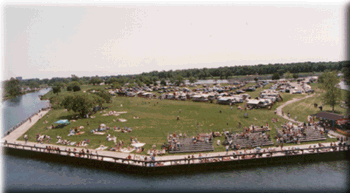

A number of fans come down with their camper or R/V and park overnight on Belle Isle. We have a nice area for this, close to the action of the Belle Isle pits.

See the Belle Isle Map for directions on how to get to this area.
There is a nominal R/V parking fee. Proceeds from this area go to Belle Isle Parks & Recreation.. call them at (313) 267-7115 for more info.
 Return to the Ticket Info page.
Return to the Ticket Info page.
All contents Copyright © 1997 Spirit of Detroit THUNDERFEST, except where noted.
Web page created by Brian Reed.
 Return to the Top THUNDERFEST page.
Return to the Top THUNDERFEST page.
All Rights Reserved.